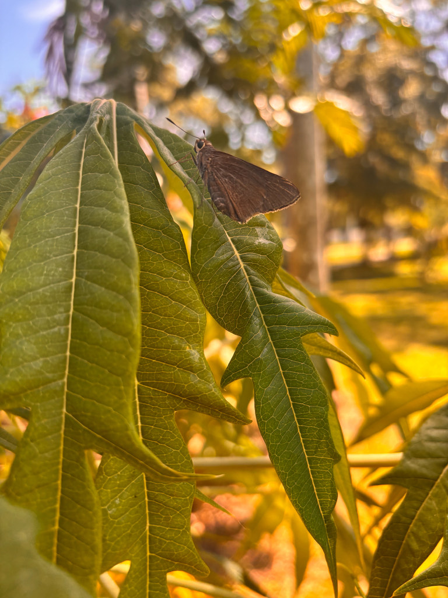

- One of the largest skippers you will see in the park — dark brown, broad-winged, and unusually calm. It tends to perch motionless on low vegetation for long stretches, making it one of the easiest butterflies here to actually study up close.
- The name comes from the same source as cappuccino: Capuchin friars, whose brown robes the butterfly's rich chestnut coloring was thought to resemble.
- Its caterpillars eat only palms, so wherever ornamental and native palms thrive, the Monk Skipper is likely not far behind. Florida's suburban palm gardens have suited it very well.
- Originally a Cuban species, the Monk Skipper established itself in Florida from strays crossing the Florida Straits — the first confirmed breeding population appeared in 1947.
A large skipper — wingspan 1 7/8 to 2 3/8 inches (about 4.8 to 6 cm). Females tend to run slightly larger than males.
Males are dark, nearly black-brown with a gray stigma (scent patch) on the forewing and a warm orange-brown wash along the base of the leading edge. Females are somewhat paler brownish-black with a diffuse pale patch on the forewing.
Both sexes share a rich mahogany-chestnut red on the hindwing underside — the most distinctive mark when the butterfly is perched with wings folded. The head, thorax, and abdomen show blue-gray hair-scales.
Wings are typically held flat and folded, not spread, giving a broad, triangular outline reminiscent of a moth at rest. This is the most reliable field character for finding a perched individual.
Essentially silent, as with virtually all butterflies. Produces no song or call; the soft rustle of wing movement is the only sound associated with this species.
Look for a large, dark butterfly sitting very still on a palm frond or low shrub, wings folded flat. The mahogany underwing and blue-gray furry thorax distinguish it from smaller, more uniformly brown skippers. Females show a faint pale forewing patch; males are darker overall with a gray stigma. The calm, unhurried perching style is as much a field mark as any color pattern.
Caterpillars feed on the leaves of various palms, including saw palmetto (Serenoa repens), cabbage palm (Sabal spp.), date palm, and coconut palm. Adults drink nectar from large, tubular flowers; hibiscus is a well-documented favorite, and the species' long proboscis lets it reach deep into blossoms that shorter-tongued insects cannot access.
Check the undersides of palm fronds and the broad leaves of shrubs throughout the park, especially near saw palmetto stands or any ornamental palm plantings. Garden beds with large tubular flowers — hibiscus in particular — are good spots to find adults nectaring. This is a butterfly that rewards slow walking rather than scanning; look for something sitting very still that you might otherwise take for a fallen leaf.
Present in Manatee County for most of the year, with adults recorded from at least March through December and possibly in warm winter months as well. Multiple broods mean there is rarely a long gap between flights. Adults are most active and visible during morning and afternoon hours on warm, sunny days.
Observe from as close as you like — this species is famously tolerant of approach when perched. Avoid touching or handling butterflies, as it can damage the delicate wing scales.
- © Lilah Thomas (CC-BY-NC), via iNaturalist